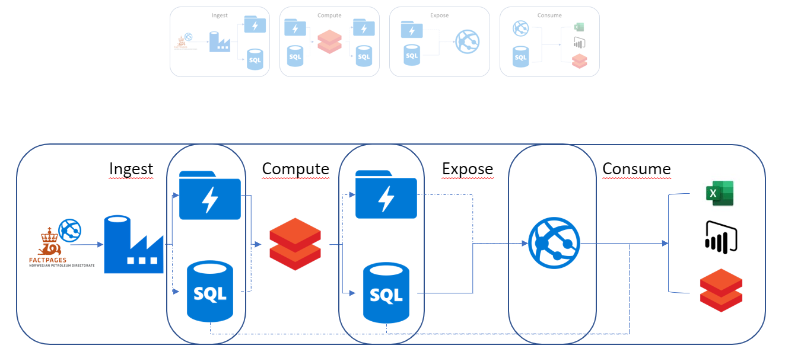

Introduction
- A hands on introduction with Omnia
- What are we not covering?
- Signup
- https://github.com/equinor/omnia-tutorial/
P - A hands on introduction with Omnia
O - A better understanding of Omnia
W - Better equiped to develop within Equinor's new IT platform
E - Who has worked with Omnia? What expectations do people have?
R - ?
O - A better understanding of Omnia
W - Better equiped to develop within Equinor's new IT platform
E - Who has worked with Omnia? What expectations do people have?
R - ?
How: A mixture of presentations and tutorial. We will reference Azure documentation extensively as they need to know how to navigate these pages.
What we are not covering
- You will not be an expert after 1 day
- Every possible scenario - but we will touch on alternatives
- All the details - this is a high level introduction to set context, we will dig into the details more as we go along.
Other
- Allowed to leave if not suitable.
- Signup / provisioning.
What is Omnia (and why?)

- What is Omnia
- Equinors cloud journey
- Enabled by certain technology platforms
- Pillars * Sharing - move from silos to common platform. * Responsibility - more possibilities, but requires more responsibility. (e.g. complience with data architecture, API strategy, cost, ...). * Process - devops, infra as code, cloud first mindset, EDM
- Omnia as an Environment
- Runtime environment + Compute + Storage
- Develop Tab (Runtime) - The basic products (subscription, resourcegroup, networking). Show https://docs.omnia.equinor.com/
- Omnia classic
- Omnia applications
- Standalone
- Data Tab - When does data become a part of the data platform. Will come back to later also.
We will revisit many of these topics as part of the tutorial.
Tutorial scenario

https://www.npd.no/en/facts/news/Production-figures/
http://factpages.npd.no/factpages/Default.aspx?culture=en
http://factpages.npd.no/factpages/Default.aspx?culture=en
- NPD holds open data on production from different fields.
- Create a pipeline to make the data available through Omnia.
- Case chosen to easily highlight some of the important considerations when building cloud base data pipelines.
What we Will Build
- Details on choices for each part and omissions are covered as we go.
- The story is key.
- Omnia Applications (v's workshop) - subscription / resource group
Working with Azure

- Portal, CLI, Power Shell, Cloud Shell, SDK, ARM templates, DevOps ...
- For this tutorial everything can be done through the portal. Where possible we will describe and give alternative options that might more closely reflect how you would develop in practice.